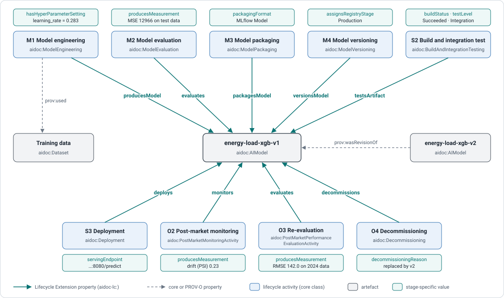
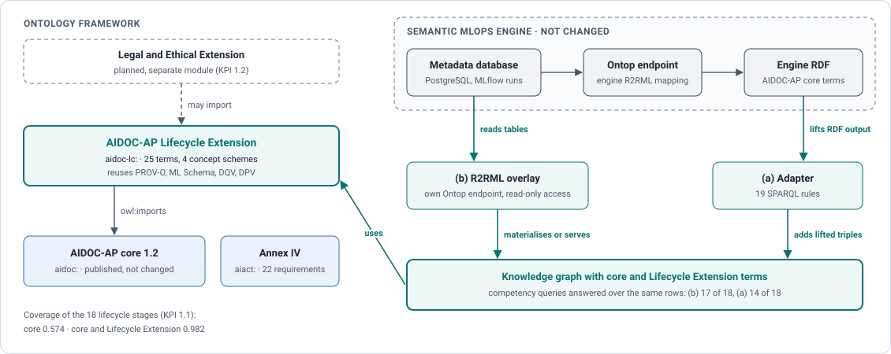

| Stage | Core activity class | Extension terms |
|---|---|---|
| Exploration and validation | aidoc:ExplorationAndValidation | producesMeasurement |
| Data preparation | aidoc:DataProcessing | DataAugmentation, Tokenization, processingTechnique, hasHyperParameterSetting, producesMeasurement |
| Model training and engineering | aidoc:ModelEngineering | producesModel, hasHyperParameterSetting |
| Model evaluation | aidoc:ModelEvaluation | evaluates, producesMeasurement, producesTestReport |
| Model packaging | aidoc:ModelPackaging | packagesModel, packagingFormat |
| Model versioning | aidoc:ModelVersioning | versionsModel, assignsRegistryStage |
| Software development | aidoc:SoftwareDevelopment | producesSoftware |
| Build and integration testing | aidoc:BuildAndIntegrationTesting | testsArtifact, buildStatus, testLevel, producesTestReport |
| Deployment and model serving | aidoc:Deployment | deploys, servingEndpoint |
| Software versioning and change management | aidoc:SoftwareVersioning | versionsSoftware |
| Post-market monitoring | aidoc:PostMarketMonitoringActivity | monitors, producesMeasurement |
| Re-evaluation | aidoc:PostMarketPerformanceEvaluationActivity | evaluates, producesMeasurement |
| Retirement and decommissioning | aidoc:Decommissioning | decommissions, decommissioningReason, decommissioningAction |
| Any lifecycle activity | aidoc:AIActivity | usesComputationalResource, producesChangeRecord |